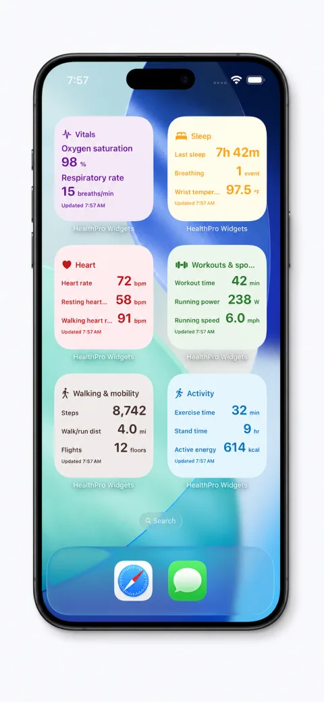
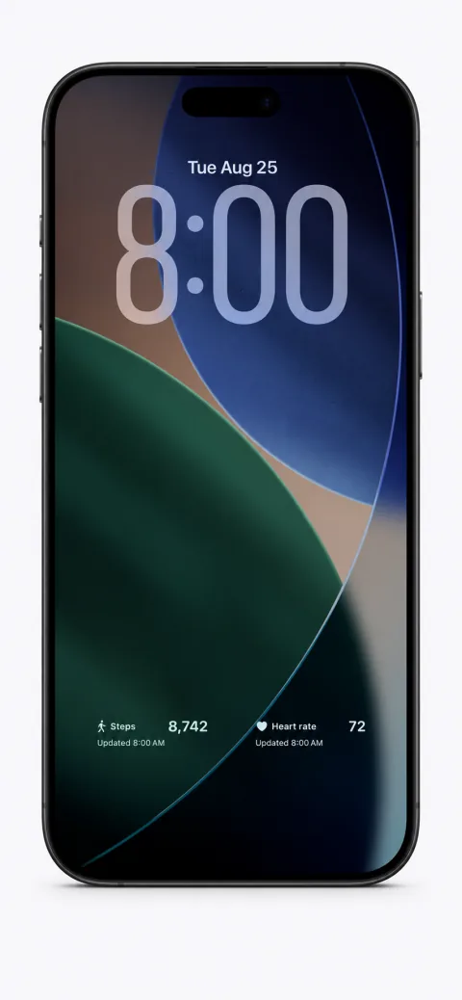
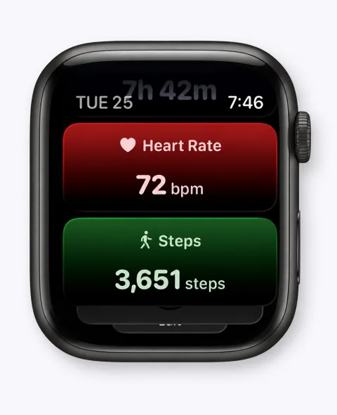
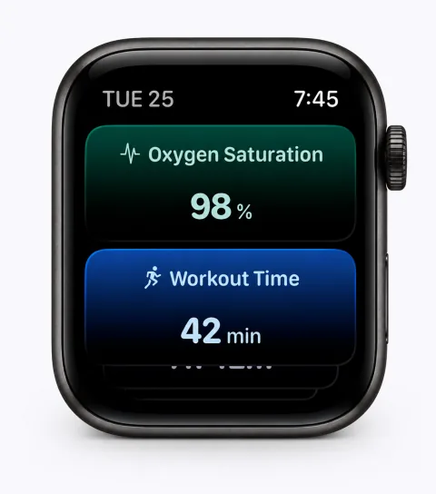
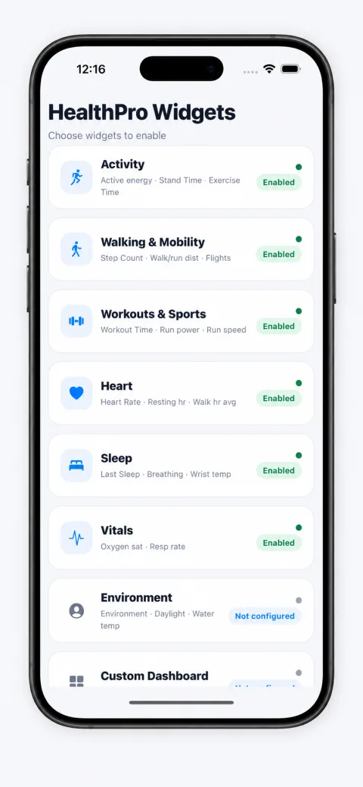
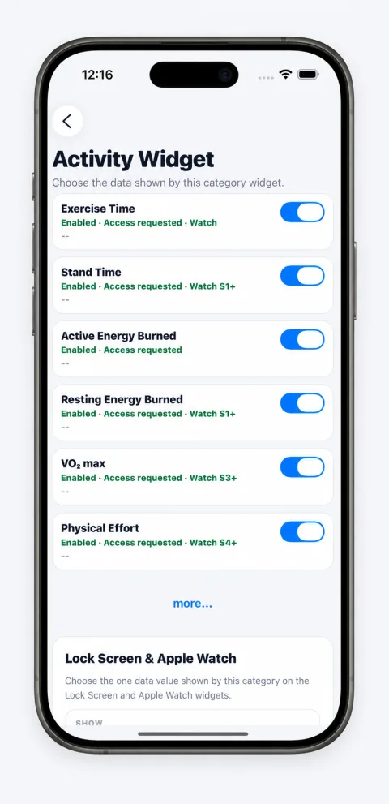
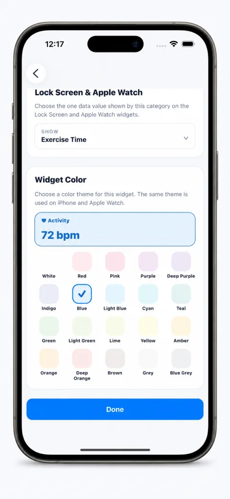

No HealthPro account required. Use the app without creating another health profile online.
For iPhone and Apple Watch
Your health.A glance away.
Bring the Apple Health information you care about to your Home Screen, Lock Screen, and supported Apple Watch widgets. Choose your metrics and make your widgets your own.
Free to download. Optional Pro upgrade.


Lock Screen
The numbers you follow, where you already look.
Keep selected health metrics close at hand, from everyday activity and walking to heart, sleep, and vital information.
- Activity
- Walking
- Heart
- Sleep
- Vitals
Apple Watch
A quick check, right on your wrist.
Keep selected health metrics close with Apple Watch widgets, from steps and heart rate to other supported values.
Available metrics depend on your device, Health permissions, and recorded data. These previews show example values, not live data.


Make it yours
Choose the data. Make it yours.
HealthPro Widgets keeps setup focused: choose the categories you want, select the values they show, and finish with a color that fits your screen.
Available metrics depend on your device, Health permissions, and data recorded in Apple Health. Some metrics require Pro.
-
01
Pick your categories.
Choose the kinds of health information you want to see.

-
02
Choose your metrics.
Select the supported values each category displays.

-
03
Set your colors.
Match your widgets to your screen with available color themes.

Pro unlocks additional supported health data and customization options. For permission and widget-placement help, visit Support.
Supported data
Find the health data you care about.
Explore the metrics available for your widgets, from everyday activity to heart, sleep, and more.
Available metrics depend on your device, Health permissions, and data recorded in Apple Health. Some metrics require Pro.
View supported health data
The table describes values HealthPro can display from Apple Health. A Watch note describes one supported recording source, not a requirement for every source. On smaller screens, scroll within the table to see all columns.
| Category | Health data | Access | Requirements |
|---|---|---|---|
| Activity | Exercise Time | Free | Recorded in Apple Health |
| Activity | Stand Time | Free | Recorded in Apple Health; Apple Watch S1+ source |
| Activity | Active Energy Burned | Pro | Recorded in Apple Health |
| Activity | Resting Energy Burned | Pro | Recorded in Apple Health; Apple Watch S1+ source |
| Activity | VO₂ max | Pro | Recorded in Apple Health; Apple Watch S3+ source |
| Activity | Physical Effort | Pro | Recorded in Apple Health; Apple Watch S4+ source |
| Activity | Estimated Workout Effort Score | Pro | Recorded in Apple Health; Apple Watch S6+ source |
| Activity | Push Count | Pro | Recorded in Apple Health; Apple Watch source |
| Activity | Stand Hour | Pro | Recorded in Apple Health; Apple Watch source |
| Walking & Mobility | Steps | Free | Recorded in Apple Health |
| Walking & Mobility | Walking + Running Distance | Free | Recorded in Apple Health |
| Walking & Mobility | Flights Climbed | Free | Recorded in Apple Health |
| Walking & Mobility | Walking Speed | Pro | Recorded in Apple Health |
| Walking & Mobility | Walking Steadiness | Pro | Recorded in Apple Health |
| Walking & Mobility | Walking Asymmetry | Pro | Recorded in Apple Health |
| Walking & Mobility | Walking Double Support | Pro | Recorded in Apple Health |
| Walking & Mobility | Walking Step Length | Pro | Recorded in Apple Health |
| Walking & Mobility | Stair Ascent Speed | Pro | Recorded in Apple Health; Apple Watch S5+ source |
| Walking & Mobility | Stair Descent Speed | Pro | Recorded in Apple Health; Apple Watch S5+ source |
| Walking & Mobility | Wheelchair Distance | Pro | Recorded in Apple Health; Apple Watch source |
| Walking & Mobility | Number of Times Fallen | Pro | Recorded in Apple Health; Apple Watch S4+ source |
| Walking & Mobility | Running Ground Contact Time | Pro | Recorded in Apple Health; Apple Watch S6+ source |
| Walking & Mobility | Running Stride Length | Pro | Recorded in Apple Health; Apple Watch S6+ source |
| Walking & Mobility | Running Vertical Oscillation | Pro | Recorded in Apple Health; Apple Watch S6+ source |
| Walking & Mobility | Six-Minute Walk Test Distance | Pro | Recorded in Apple Health; Apple Watch S3+ source |
| Workouts & Sports | Workout Time | Free | Recorded in Apple Health |
| Workouts & Sports | Running Power | Pro | Recorded in Apple Health; Apple Watch S6+ source |
| Workouts & Sports | Running Speed | Pro | Recorded in Apple Health; Apple Watch S4+ source |
| Workouts & Sports | Cycling Speed | Pro | Recorded in Apple Health; compatible speed sensor |
| Workouts & Sports | Cycling Distance | Pro | Recorded in Apple Health; Apple Watch source |
| Workouts & Sports | Swimming Distance | Pro | Recorded in Apple Health; Apple Watch S2+ source |
| Workouts & Sports | Swimming Stroke Count | Pro | Recorded in Apple Health; Apple Watch S2+ source |
| Workouts & Sports | Cross-Country Skiing Distance | Pro | Recorded in Apple Health; Apple Watch S6+ source |
| Workouts & Sports | Downhill Snow Sports Distance | Pro | Recorded in Apple Health; Apple Watch S3+ source |
| Workouts & Sports | Paddle Sports Distance | Pro | Recorded in Apple Health; Apple Watch S6+ source |
| Workouts & Sports | Rowing Distance | Pro | Recorded in Apple Health; Apple Watch S6+ source |
| Workouts & Sports | Skating Sports Distance | Pro | Recorded in Apple Health; Apple Watch S6+ source |
| Workouts & Sports | Cross-Country Skiing Speed | Pro | Recorded in Apple Health; Apple Watch S6+ source |
| Workouts & Sports | Paddle Sports Speed | Pro | Recorded in Apple Health; Apple Watch S6+ source |
| Workouts & Sports | Rowing Speed | Pro | Recorded in Apple Health; Apple Watch S6+ source |
| Workouts & Sports | Underwater Depth | Pro | Recorded in Apple Health; Apple Watch S10+ or Ultra source |
| Workouts & Sports | Workout Route | Pro | Recorded in Apple Health |
| Heart | Heart Rate | Free | Recorded in Apple Health; Apple Watch S1+ source |
| Heart | Resting Heart Rate | Pro | Recorded in Apple Health; Apple Watch S1+ source |
| Heart | Walking Heart Rate Average | Pro | Recorded in Apple Health; Apple Watch S1+ source |
| Heart | Heart Rate Recovery (1 minute) | Pro | Recorded in Apple Health; Apple Watch S4+ source |
| Heart | Heart Rate Variability (SDNN) | Pro | Recorded in Apple Health; Apple Watch S1+ source |
| Heart | Atrial Fibrillation Burden | Pro | Recorded in Apple Health; Apple Watch S4+ source |
| Heart | ECG Results | Pro | Recorded in Apple Health; Apple Watch S4+ source |
| Heart | ECG Heart Rate | Pro | Recorded in Apple Health; Apple Watch S4+ source |
| Sleep | Last Sleep | Pro | Recorded in Apple Health |
| Sleep | Sleeping Breathing Disturbances | Pro | Recorded in Apple Health; Apple Watch S9+ source |
| Sleep | Sleeping Wrist Temperature | Pro | Recorded in Apple Health; Apple Watch S8+ source |
| Vitals | Oxygen Saturation | Pro | Recorded in Apple Health; Apple Watch S6+ source |
| Vitals | Respiratory Rate | Pro | Recorded in Apple Health; Apple Watch S3+ source |
| Environment | Environmental Audio Exposure | Pro | Recorded in Apple Health; Apple Watch S4+ source |
| Environment | Headphone Audio Exposure | Pro | Recorded in Apple Health |
| Environment | Environmental Sound Reduction | Pro | Recorded in Apple Health |
| Environment | Time in Daylight | Pro | Recorded in Apple Health; Apple Watch S6+ source |
| Environment | Water Temperature | Pro | Recorded in Apple Health; Apple Watch S10+ or Ultra source |
Privacy
Your health data stays in your control.
HealthPro Widgets is designed to keep health processing close to the device and clear about the access you grant.
Read the Privacy PolicyYou control permissions. Apple Health permissions determine which data HealthPro can access.
Processed on your device. Health measurements are not uploaded to a HealthPro server.